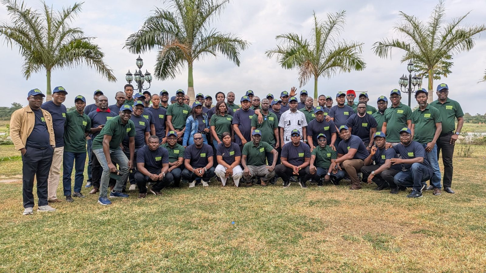
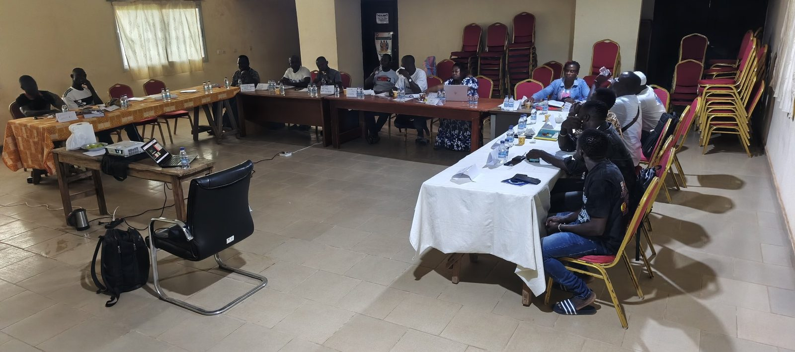

Promotionnelle · 3 min 43 · voix masculine
Un client perdu ne prévient pas
Retards, lots contestés, pertes cachées ; ISO 9001:2026 publiée ; une preuve par article, sans promesse de certificat.
GEC-CI vous aide à bâtir un système qualité simple, vivant et prouvé sur le terrain, conforme à ISO 9001:2026, pour livrer juste du premier coup, réduire les pertes et vous présenter à l'audit avec des preuves réelles. La décision de certifier appartient à l'organisme certificateur accrédité.
Satisfaction client, maîtrise des processus, fournisseurs, culture qualité et amélioration continue. Nous vendons un système qui fonctionne et se prouve, pas une promesse de date.

La norme veut une méthode définie pour savoir ce que pensent les clients et une exploitation réelle des résultats.
Chaque activité est un processus avec pilote, entrées, sorties, indicateurs et risques ; l'auditeur suit le fil du client au client.
Plus un fournisseur peut nuire au client, plus il est évalué, contrôlé et suivi.
Aucun produit ne sort sans contrôle et sans libération par une personne autorisée identifiée ; ce qui est non conforme est bloqué et tracé.
La direction doit promouvoir une culture qualité et un comportement éthique ; le personnel doit y être sensibilisé (libellé exact À CONFIRMER sur le texte officiel).
Un changement se prépare, se communique, se surveille et se revoit ; les risques et opportunités sont traités séparément.
La norme laisse dimensionner la documentation selon la taille. Nous gardons le strict nécessaire et utilisons les registres numériques de GEC-CI Pro.
Le système sert d'abord à réduire les pertes et les litiges. Le certificat est un plus commercial, pas l'unique objectif.
Personne ne peut le promettre. Il faut en général plusieurs mois de fonctionnement réel avant l'audit, et c'est l'organisme certificateur qui décide.
L'édition 2026 ajoute notamment la culture qualité, l'éthique et une maîtrise des changements renforcée ; la transition est à préparer avant l'échéance.
Nous utilisons pictogrammes, fiches visuelles, sensibilisation orale en langue locale et contrôle par les chefs d'équipe.
Le prix GEC-CI se calcule après diagnostic, lot par lot. Les coûts de tiers (norme, organisme certificateur, étalonnage) sont présentés à part, sur devis de ces tiers.
Voix off française, musique, texte affiché à l'écran : à partager avec votre conseil d'administration et vos équipes. Toutes les vidéos GEC-CI PRO
Retards, lots contestés, pertes cachées ; ISO 9001:2026 publiée ; une preuve par article, sans promesse de certificat.
Du contexte à l'amélioration, avec une usine de cajou à San Pedro et une coopérative à Soubré ; les nouveautés 2026.
Ce qui reste, ce qui change, la transition, et la place d'ISO 9001 face aux autres normes et référentiels.
Les dix étapes GEC-CI, cinq profils de clients, un code par preuve et le paiement à l'avancement.

Les réclamations reviennent, sans analyse de cause, et les bons clients partent sans prévenir.
Certains donneurs d'ordre et acheteurs internationaux demandent un système qualité prouvé.
Rebuts, retraitements, pénalités, pesées contestées et retours coûtent cher mais ne sont pas chiffrés.
Quand le dirigeant ou un technicien clé est absent, personne ne sait décider ni refaire correctement.
La même méthode que pour nos filières agricoles ; seul le référentiel change. La décision de certifier appartient à l'organisme certificateur accrédité.
Numérotation et structure de l'édition ISO 9001:2015 + Amd 1:2024 (encore valable pendant la transition), avec renvois aux changements annoncés pour ISO 9001:2026 (publiée le 16 septembre 2026). La structure harmonisée (chapitres 4 à 10) est conservée ; la sous-numérotation exacte de l'édition 2026 (notamment 6.1, chapitre 7 restructuré, mise en page du chapitre 8) est À CONFIRMER AUPRÈS DE L'ORGANISME COMPÉTENT AVANT MISE EN ŒUVRE OU AUDIT, sur le texte officiel acheté.
Reformulation GEC-CI. Le texte officiel de la norme, acheté auprès de l'ISO ou de CODINORM, fait foi. Risque : niveau d'écart le plus fréquent en Côte d'Ivoire, selon GEC-CI. 13 article(s) portent la mention « À CONFIRMER AUPRÈS DE L'ORGANISME COMPÉTENT AVANT MISE EN ŒUVRE OU AUDIT ».
Répondez honnêtement : rien n'est enregistré ni envoyé. Le résultat donne vos priorités ; il ne remplace pas le diagnostic sur place.

Elle veut gagner des appels d'offres et fidéliser ses grands comptes.

Elle exporte et subit des réclamations sur l'humidité, les corps étrangers ou les délais.

Elle veut une gestion structurée, des pesées incontestées et la confiance des acheteurs.

Elle veut réduire avaries, retards et litiges avec les chargeurs.

Elle doit passer à l'édition 2026 dans la période de transition.
Personnages : illustrations créées pour GEC-CI, ils ne représentent pas des personnes réelles.
Facture normalisée électronique pour chaque étape, sur procès-verbal de livraison. Le prix se calcule après le diagnostic, lot par lot. Aucun paiement n'est conditionné à l'obtention du certificat : l'organisme certificateur accrédité décide seul.
Vos données restent à vous : elles sont hébergées dans votre espace et vous sont restituées en fin de contrat.
64 articles, preuves codées, registres, analyse d'écarts, indicateurs, manuel intégré et passerelle IA GECI ; base de données en ligne sécurisée.
Ouvrir la plateformeManuel opérationnel : procédures, registres codifiés, check-lists et points à confirmer. Intégré à la plateforme, aussi en PDF ci-dessous.
Lire dans la plateformeSensibilisation des dirigeants, formation du responsable du système, auditeurs internes et personnel de terrain.
Demander une sessionLe système de gestion du cabinet : clients, contrats, missions, preuves, validations humaines, incidents, facturation et journal d'audit. Un seul compte pour toutes les plateformes GEC-CI ; droits vérifiés par le serveur.
Ouvrir IA GECI
GEC-CI est dirigé par Mr SIDIBE ABDOULAYE, Président-Directeur Général, ATN RA et formateur-auditeur ISO 9001, 14001 et 45001. La direction suit chaque mission jusqu'à la décision écrite.


Portraits de bureau : décors mis en scène numériquement.
| Premier contact | Réponse le jour même, rendez-vous sous 7 jours |
| Diagnostic | Rapport sous 10 jours ouvrés après la visite |
| Vos questions | Réponse sous 48 heures ouvrées |
| Comité de pilotage | Chaque mois, compte rendu sous 5 jours ouvrés |
| Données transmises | Retour écrit sous 5 jours ouvrés |
| Audit blanc | Rapport sous 7 jours ouvrés |
Avec les 64 articles de la norme. Vous repartez avec vos trois priorités.
+225 05 55 49 45 94WhatsApp+225 07 57 88 13 49